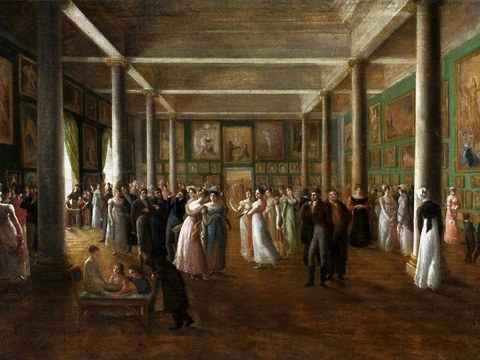
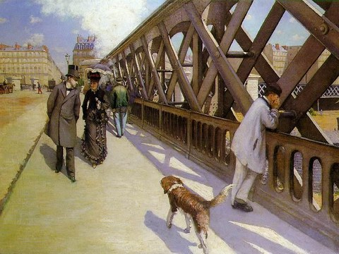
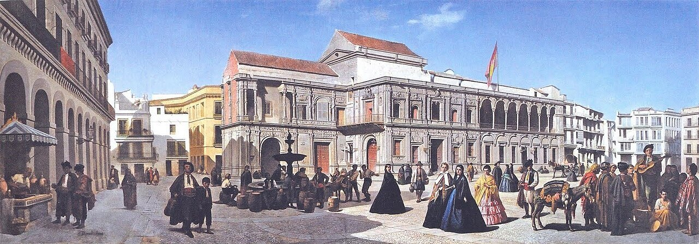

Optima Academy OnlineAn Education Experience Company
Optima Academy OnlineAn Education Experience CompanyVerbos con yo irregular
A quick look back at yo
Say the seven yo forms from yesterday out loud before we build the rest: hago, pongo, salgo, traigo, conozco, veo, doy. Those are the only forms you have to memorize as special — today you'll see why.
Three verbs, fully — watch the yo row
In each table, only the yo row, in bold red, is irregular. Everything below it is a plain regular ending.
| Subject | hacer | salir | conocer |
|---|---|---|---|
| yo | hago | salgo | conozco |
| tú | haces | sales | conoces |
| usted / él / ella | hace | sale | conoce |
| nosotros/as | hacemos | salimos | conocemos |
| ustedes / ellos / ellas | hacen | salen | conocen |
See it? Cover the top row and every verb is just a normal -er / -ir verb.
The other four — same idea, special yo only
| Verb | yo (irregular) | the rest (regular) |
|---|---|---|
| poner (to put) | pongo | pones · pone · ponemos · ponen |
| traer (to bring) | traigo | traes · trae · traemos · traen |
| ver (to see) | veo | ves · ve · vemos · ven |
| dar (to give) | doy | das · da · damos · dan |
(In Latin America, ustedes covers “you all” in every setting. Vosotros — Spain's informal “you all” — you'll meet later, labeled as European.)
One row special, the rest ordinary
YO — the odd one out
hago · pongo · salgo · traigo
conozco · veo · doy
TODO LO DEMÁS — regular
-ar (dar): -as · -a · -amos · -an
das, da, damos, dan
-er / -ir: -es · -e · -emos / -imos · -en
haces, hace, hacemos, hacen…
The shortcut: if the subject is yo, use the special form. For anybody else, conjugate it like a regular verb. (That is true for these seven verbs; the box below shows a verb that changes in two ways.)
Seeing a person? Put a before the person: Veo a mis amigos (I see my friends). With a place or a thing there is no a: Veo el museo (I see the museum).
Careful: a verb can change in two separate ways, and they are not the same thing. A special yo form changes only yo (salgo). A boot stem change from Módulo 2 changes every form except nosotros (quieres). Some verbs do one, and tener does both.
✓ Good news: the -go ending (salgo, hago, pongo, traigo, tengo) only ever happens with yo, the first person singular. For tú, él, ella, nosotros and ellos, the -go disappears and the verb goes back to normal: sales, haces, pones, traes, tienes.
| verb | yo | tú · él · ellos | nosotros | what changes |
|---|---|---|---|---|
| salir | salgo | sales, sale, salen | salimos | yo only |
| querer | quiero | quieres, quiere, quieren | queremos | the boot |
| tener | tengo | tienes, tiene, tienen | tenemos | both: the special yo form wins for yo |
Follow the chart. For each verb, answer the questions with Sí or No, then choose the form at the end of your path.
Your turn: how would you say "We go out at eight" (from salir)? Type it, then press Check.
Words you need: nosotros = we · salir = to go out · a las ocho = at eight
«Cada día yo salgo de casa y voy al centro. Hago muchas cosas: pongo dinero en el banco, veo a mis amigos en la plaza y a veces doy un paseo por el mercado. Siempre traigo un mapa porque la ciudad es enorme.»
Glosario: cada (each / every) · muchas cosas (many things) · a veces (sometimes) · un paseo (a stroll) · siempre (always) · un mapa (a map) · enorme (huge / enormous)
Three tools, three jobs
Two new verbs first. You'll want these for getting around a city. Both are regular -ar verbs, so they follow the hablar pattern: yo visito, nosotros caminamos.

visitarto visit
caminarto walk
You've built up several ways to talk about moving around. They do different jobs — listen and read across the row:
| Tool (from) | Its job | Example · listen |
|---|---|---|
| ir a + infinitive (earlier S2) | what you're going to do | Mañana voy a visitar el museo. |
| stem-changers (M2) | wants, can, begins… (vowel shifts) | Yo quiero ir al centro. |
| yo irregular (M3) | what I do (special yo form) | Yo salgo de casa a las ocho. |
And don't forget estar from Semester 1 for location: El banco está cerca de la plaza. — here's estar in action.
In almost every Latin-American city, life centers on la plaza. In México it's often called el Zócalo — and the one in la Ciudad de México is among the largest public squares in the world. People dan un paseo (take a stroll), meet friends, and watch the city go by. When you say «doy un paseo por la plaza,» you're describing a real daily rhythm.
Our featured country this module is México. Its capital, la Ciudad de México, is one of the biggest cities on the planet — home to more than 21 million people in its metropolitan area, sitting at over 2,200 meters (7,300 feet) of altitude in a mountain valley. It's built on the ruins of Tenochtitlan, the great Aztec capital. Getting around it is a real skill: locals rely on el metro, buses, and knowing exactly when to doblar a la derecha. That's why this module's Spanish matters — it's the language of a city on the move.
Seven special yo forms, and everything else you already knew. That's the whole rule — ¡hasta mañana! (See you tomorrow!)
